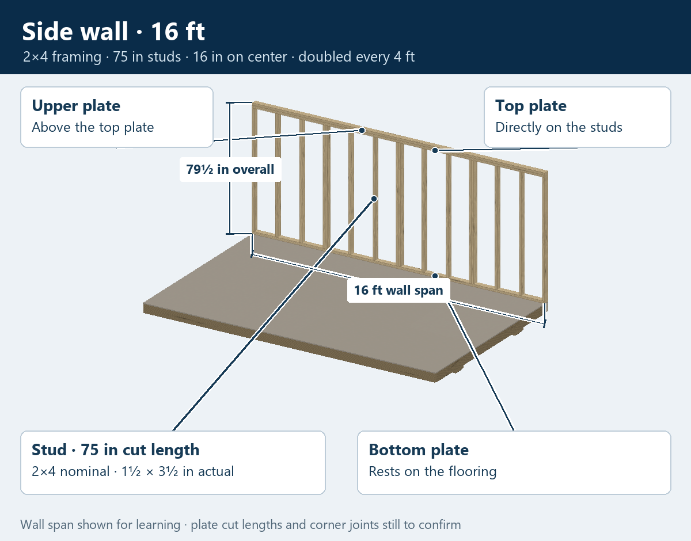
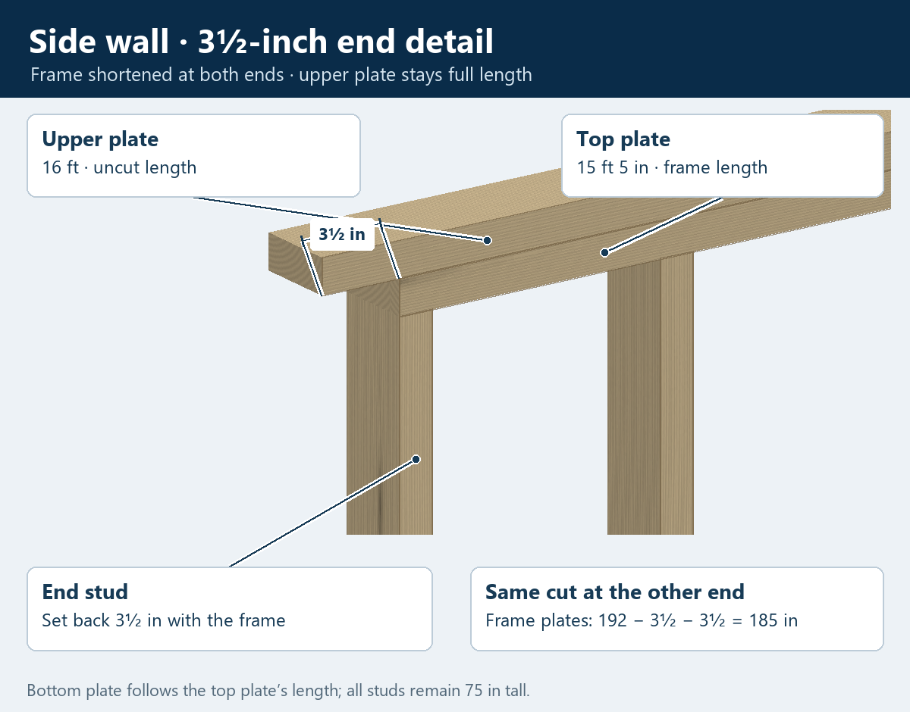
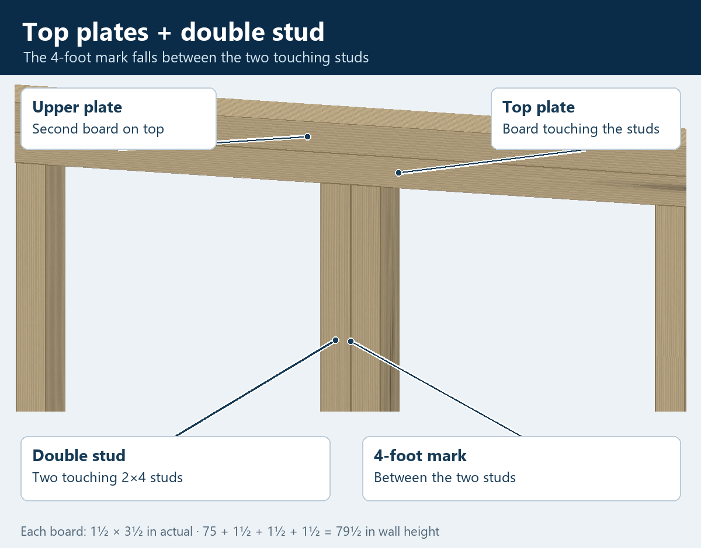
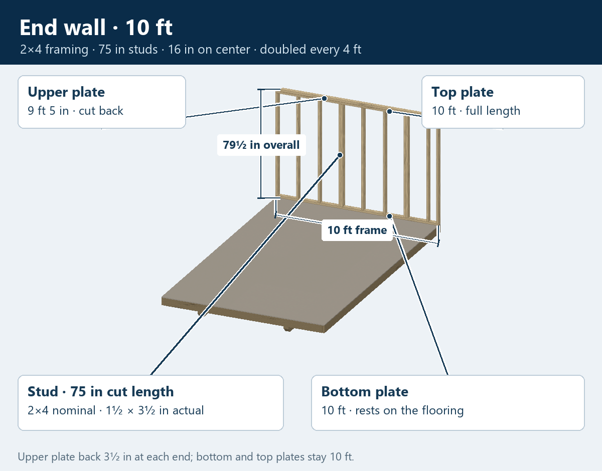
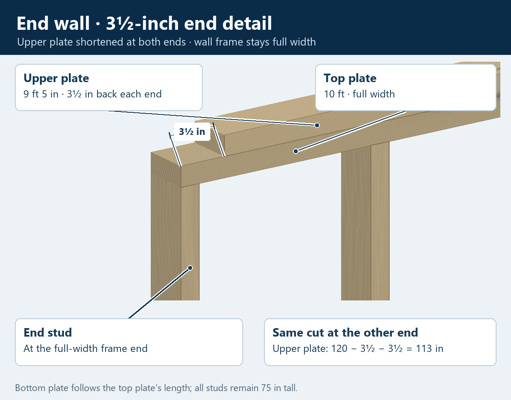

10 × 16 · Building the walls
Wall framing
The 16-foot wall is the side wall. The 10-foot wall is the end wall. These views show one wall at a time resting on the completed floor.
The studs and all three plates are 2×4s: 1½ × 3½ inches actual. The loft-wall studs are cut to 75 inches. Add the three flat plates and the framing is 79½ inches high above the flooring.
The side wall frame stops 3½ inches short at each end, including the bottom plate, top plate and end studs. Its upper plate stays the full 16 feet. The end wall frame stays the full 10 feet, while its upper plate stops 3½ inches short at each end.
| Wall | Bottom and top plates | Upper plate |
|---|---|---|
| Side wall | 15 ft 5 in | 16 ft |
| End wall | 10 ft | 9 ft 5 in |
Side wall · 16 feet

Side wall ends

Top plates and a double stud

End wall · 10 feet

End wall upper plate

Your names for the parts
- Bottom plate
- The horizontal board under the studs, resting on the flooring.
- Stud
- An upright board between the bottom plate and top plate.
- Top plate
- The horizontal board directly on top of the studs.
- Upper plate
- The second horizontal board above the top plate.
- Double stud
- Two touching studs, with the 4-foot mark between them.
The end setbacks and resulting plate lengths are recorded. The first stud-layout datum, any extra corner studs, fasteners and openings are still to confirm. These pictures show separate walls; the wall wood's color and grain are illustrative.